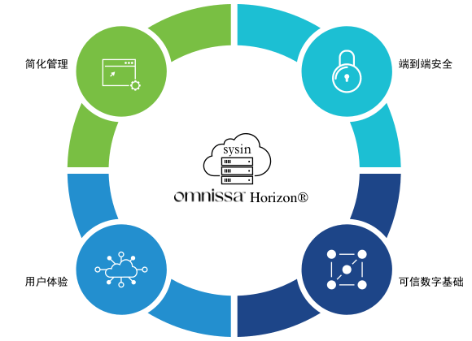

请访问原文链接：Omnissa Horizon 8 2406 (8.13) 发布 - 虚拟桌面基础架构 (VDI) 和应用软件 查看最新版。原创作品，转载请保留出处。
作者主页：sysin.org
Horizon 8
formerly VMware Horizon

通过从本地到云端高效、安全地交付虚拟桌面和应用程序，提升数字工作空间体验。
随时随地访问虚拟桌面和应用程序
-
从云端管理
使用基于云的控制台和 SaaS 管理服务跨私有云、混合云和多云基础设施高效管理桌面和应用程序。
-
提供端到端安全性
利用 Horizon 基础设施内置的内在安全性来获得对企业资源的高度安全的远程访问 - 提供从设备到数据中心再到云的保护。
-
提高投资回报率
借助行业领先的 VDI、DaaS 和应用程序平台实现跨私有云和公共云的灵活部署选项，从而节省成本并实现业务价值。
新的独立软件公司 Omnissa 诞生了
2024 年 7 月 1 日

今天标志着一个令人难以置信的里程碑。
随着 KKR 宣布完成对我们的收购，Omnissa 诞生了。
我们现在是一家独立的软件公司，拥有人才、技术和生态系统资产的独特组合，专门致力于为世界各地的客户和合作伙伴提供变革性的工作空间体验。
在 KKR 的支持下，我们现在拥有敏捷性、承诺和投资来承担我们作为定义和引领这个 260 亿美元市场机遇的知名软件公司的地位。
这一刻已经酝酿了两年多，我很自豪能被一支经验丰富的管理团队包围，他们为实现我们的共同愿景而不懈努力。
我们的 4,000 名员工将受到共享所有权结构的约束，这使我们所有人踏上重新定义行业和工作未来的旅程。
这一刻是我们的客户和合作伙伴促成的。我们不会轻视您的忠诚。我们的存在得益于您对我们技术的深度投资以及您对实现人工智能驱动的自主工作空间愿景的强烈渴望。我们打算通过我们的平台创造巨大的新价值并简化我们的合作方式来继续赢得您的信任。
本月晚些时候，我们将举办 Omnissa Live，这是一系列活动中的第一个，旨在充分阐明我们作为一家独立公司的愿景和战略 (sysin)，并探索我们未来看到的令人兴奋的机会。请计划在那里加入我们。我们知道过去七个月造成了不确定性。今天，我可以肯定地向您保证，我们准备将您带到新的高度。
对于我们的技术同行——操作系统、云环境、安全系统、应用程序平台和设备领域的创新领导者和品类先驱——我们很高兴与您深入合作，为我们的客户和企业建立一个充满灵活性和选择的生态系统。你的。
是时候去上班了。
Shankar Iyer，Omnissa 首席执行官
- 该交易还将包括在某些司法管辖区进行本地交割，预计将在 2024 年剩余时间内完成。*
特征: 重新定义 VDI、DaaS 和应用程序体验

-
灵活的云部署选项
使用 Horizon 控制平面的自动化和 SaaS 服务在本地或公共云或混合云中部署和管理桌面和应用程序。
-
现代管理
使用即时克隆技术部署功能齐全、个性化的虚拟桌面和应用程序，Workspace ONE® 移动威胁防御 到 App Volumes。
-
最佳的最终用户体验
通过安全的工作站级性能 (sysin)、丰富的图形以及优化的语音和视频提供卓越的远程体验。
-
简化的应用程序管理
使用 App Volumes 跨 VDI、DaaS 和已发布的应用程序环境高效地按需交付和管理应用程序。
-
端到端可见性
使用 Workspace ONE Intelligence 在可定制的仪表板上监控性能并获得可行的见解。
用例: 解决您最棘手的挑战
凭借从本地到公共云和混合云的灵活部署选项，Horizon 支持关键用例，使组织能够响应变化并推动业务成果。

-
赋能混合劳动力
提供一致的桌面和应用程序体验 (sysin)，让员工随时随地在任何设备上保持联系并保持高效。
-
管理波动的容量
随着最终用户需求的变化，Horizon 可以轻松地扩大或缩小访问范围，并为支持承包商、季节性工人、并购和学生提供安全访问。
-
启用云优化用例
将 Horizon 无缝扩展到您选择的公共云提供商，以支持数据中心扩展、突发和应用程序托管。
-
确保业务连续性
Horizon 建立在敏捷的基础设施之上，提供管理变革所需的弹性，并通过保持员工的联系和生产力来促进业务连续性。
比较 Horizon 版本和定价
Horizon Standard Plus
提供适用于多云部署的全套云管理服务的优质桌面交付。
-
Windows VDI
-
基本的安全和用户体验功能
-
本地私有或公共 VMware vSphere 云上的单云部署
每月价格为 5.79 美元 / 用户起
Horizon Enterprise Plus
高级桌面和应用程序交付，以及针对单一云部署的精选云管理服务。
-
Windows 和 Linux VDI 和应用程序交付
-
高级管理功能，包括 App Volumes 和 DEM Enterprise
-
基本的安全和用户体验功能 (sysin)
-
本地私有或公共 VMware vSphere 云上的单云部署
每月价格为 10.71 美元 / 用户起
Horizon Universal
为多云部署提供全套云管理服务，提供优质桌面和应用程序交付。
-
Windows 和 Linux VDI 和应用程序交付
-
高级管理功能，包括 App Volumes 和 DEM Enterprise
-
先进的安全性和用户体验功能
-
Horizon 的 Workspace ONE Intelligence
-
灵活地部署在本地私有云和 / 或公共云中
每月价格为 12.50 美元 / 用户起
Horizon Apps Universal
强大的应用程序交付以及用于混合云部署的全套云管理服务。
-
Windows 和 Linux 虚拟应用程序交付
-
高级管理功能，包括 App Volumes 和 DEM Enterprise
-
先进的安全和用户体验功能集 (sysin)
-
Horizon 的 Workspace ONE Intelligence
-
灵活地部署在本地私有云和 / 或公共云中
每月价格为 6.00 美元 / 用户起
Horizon Apps Standard
通过适用于本地或云部署的基本云管理服务进行简单的应用程序交付。
-
Windows 和 Linux 虚拟应用程序交付
-
标准管理功能
-
基本的安全和用户体验功能
-
Horizon 的 Workspace ONE Intelligence
-
单云部署在本地私有云或公有云中
每月价格为 4.67 美元 / 用户起
准备好开始了吗
体验真正的多云管理和近乎实时的可见性。
- VMware Horizon 8 2406 Enterprise, 2024-07-25
- VMware App Volumes 4, version 2406, 2024-07-25
- VMware Dynamic Environment Manager Enterprise 2406, 2024-07-25
- VMware ThinApp 2312, 2024-01-23
- VMware Workspace ONE Access 24.07, 2024-08-12
- VMware Unified Access Gateway 2406, 2024-07-25
- Windows OS Optimization Tool for VMware Horizon 1.2.1, 2024-08-05
- VMware Horizon DaaS Platform 9.2.3
VMware Horizon 8 2406
Horizon Enterprise Files, Release Date: 2024-07-25
-
百度网盘链接：https://pan.baidu.com/s/15qjahiFXZduYQAAT0YrdoQ?pwd=45wk
-
Horizon Connection Server (64-bit)
File size: 351.96 MB
Name: VMware-Horizon-Connection-Server-x86_64-8.13.0-10070698069.exe
Connection Server to provision and manage desktops -
Horizon Recording Server
File size: 70.6 MB
Name: HorizonRecordingServer-1.11.0.exe
Server to manage recording of virtual sessions -
Horizon Agent (64-bit)
File size: 243.89 MB
Name: VMware-Horizon-Agent-x86_64-2406-8.13.0-10002333884.exe
Guest agent required for each remote desktop -
Horizon Agent Direct-Connection (64-bit)
File size: 57.02 MB
Name: VMware-Horizon-Agent-Direct-Connection-x86_64-8.13.0-10002333884.exe
An installable plugin to support direct connect and Horizon Air -
Horizon Agent for 64-bit Linux
File size: 176.42 MB
Name: VMware-horizonagent-linux-x86_64-2406-8.13.0-10030307256.tar.gz
Horizon agent for systems running 64-bit Linux -
Horizon Agent for 64-bit Redhat8.x Linux
File size: 128.18 MB
Name: VMware-horizonagent-linux-2406-8.13.0-10030307256.el8.x86_64.rpm
Horizon agent for system running 64-bit Redhat8.x Linux -
Horizon Linux Agent Direct-Connection (64-bit)
File size: 50.37 MB
Name: VMware-horizonagent-linux-vadc-x86_64-2406-8.13.0-10030307256.tar.gz
Horizon Linux Agent Direct-Connection (64-bit) installer -
Horizon Recording Agent
File size: 4.75 MB
Name: HorizonRecordingAgent-1.11.0.exe
Agent software that records virtual sessions -
Horizon Recording Agent for Linux (tar.gz format)
File size: 30.28 MB
Name: Horizon.Recording.Linux.Agent-1.11.0.0.tar.gz
Agent software that records virtual sessions -
Horizon Recording Agent for Linux (rpm format)
File size: 22.44 MB
Name: HorizonRecording.Linux.Agent-1.11.0.0.rpm
Agent software that records virtual sessions -
Horizon HTML Access Direct-Connection
File size: 9.53 MB
Name: VMware-Horizon-View-HTML-Access-2406-8.13.0-9996414817.zip
Web server static content for supporting HTML Access with Horizon Agent Direct-Connection -
Horizon GPO Bundle
File size: 987.4 KB
Name: VMware-Horizon-Extras-Bundle-2406-8.13.0-9986028157.zip
Zip file containing various ADM template files to configure Horizon functionality.
Unified Access Gateway Enterprise files. For use with Horizon Enterprise.
-
百度网盘链接：https://pan.baidu.com/s/1sgUwi2s1yC_ET1kMNUCiKA?pwd=nupt
-
Unified Access Gateway (UAG) 2406 for vSphere Amazon AWS and Google Cloud (Non-FIPS)
File size: 2687.38 MB
Name: euc-unified-access-gateway-24.06.0.0-9963269314_OVF10.ova
Deploy Tunnel or Content Gateway using Unified Access Gateway virtual appliance.
VMware Horizon Client 8, version 2406
-
百度网盘链接：https://pan.baidu.com/s/1QkWO5wb2Q_yyCt49NQo9QQ?pwd=ffwa
-
VMware Horizon Client for Windows
VMware Horizon Client for Windows (Include) -
VMware Horizon Client for Mac
VMware Horizon Client for macOS (Include) -
VMware Horizon Client for Linux
VMware Horizon Client for 32-bit Linux (Include in 2012, no update)
VMware Horizon Client bundle installer for 64-bit Linux (Include)
VMware Horizon Client deb package for 64-bit Linux (Include)
VMware Horizon Client for Linux tarball version (Include)
VMware Horizon Client RPM package for 64-bit Linux (Include) -
VMware Horizon Client for iOS
VMware Horizon Client for iOS devices -> App Store -
VMware Horizon Client for Android
VMware Horizon Client for Android 32-bit x86-based devices (Include)
VMware Horizon Client for Android 64-bit x86-based devices (Include)
VMware Horizon Client for Android 32-bit ARM-based devices (Include)
VMware Horizon Client for Android 64-bit ARM-based devices (Include)
VMware Horizon Client for Android devices from Google Play store -> 点击下载
VMware Horizon Client for Kindle Fire in Amazon Appstore for Android -> 点击下载 -
VMware Horizon Client for Chrome
VMware Horizon Client for Chrome devices -> 点击下载
Omnissa Horizon Clients 2412
Release Date 2024-12-23
-
Omnissa Horizon Client for Windows
- Omnissa Horizon Client for Windows -> 点击下载
-
Omnissa Horizon Client for macOS
- Omnissa Horizon Client for macOS -> 点击下载
-
Omnissa Horizon Client for Linux
-
Omnissa Horizon Client for iOS
Omnissa Horizon Client for iOS devices -> 点击下载 -
Omnissa Horizon Client for Android
- Omnissa Horizon Client for Android 64-bit ARM-based devices -> 点击下载
- Omnissa Horizon Client for Android devices from Google Play store -> [同上]
-
Omnissa Horizon Client for Chrome
- Omnissa Horizon Client for Chrome devices -> 点击下载
VMware App Volumes 4, version 2406
-
百度网盘链接：https://pan.baidu.com/s/1wI1iwOUgKnKNzGz-3SrPtw?pwd=
[本站 ESXi 8 定制版用户或已通过导航栏捐助下载 VMware 产品可留言获取] -
App Volumes ISO File
File size: 520.89 MB
Name: VMware_App_Volumes_v4.14.0_30072024.ISO
Release Date: 2024-07-25 -
Unlimited desktops license key
File size: 696 B
Name: VMware_App_Volumes_License_v4.key
Release Date: 2024-03-28
VMware App Volumes 4, version 2410
-
百度网盘链接：https://pan.baidu.com/s/1wI1iwOUgKnKNzGz-3SrPtw?pwd=
[本站 ESXi 8 定制版用户或已通过导航栏捐助下载 VMware 产品可留言获取] -
App Volumes ISO File
File size: 539.26 MB
Name: VMware_App_Volumes_v4.15.0_28102024.ISO
Release Date: 2024-11-06 -
Unlimited desktops license key
File size: 696 B
Name: VMware_App_Volumes_License_v4.key
Release Date: 2024-03-28
Omnissa App Volumes 4, version 2412
Release Date: 2024-12-19
-
百度网盘链接：https://pan.baidu.com/s/1wI1iwOUgKnKNzGz-3SrPtw?pwd=
[本站 ESXi 8 定制版用户或已通过导航栏捐助下载 VMware 产品可留言获取] -
App Volumes ISO File
File size: 524.17 MB
Name: Omnissa_App_Volumes_v4.16.0_19122024.ISO
Release Date: 2024-12-19 -
Unlimited desktops license key
File size: 0.68 KB
Name: App_Volumes_License_v4.key
Release Date: 2024-12-19
VMware Dynamic Environment Manager Enterprise 2406
-
百度网盘链接：https://pan.baidu.com/s/1CnmM1ifl82E2jVJcuS8gEA?pwd=
[本站 ESXi 8 定制版用户或已通过导航栏捐助下载 VMware 产品可留言获取] -
VMware Dynamic Environment Manager
File size: 36.56 MB
Name: VMware-DEM-Enterprise-2406-10.13-GA.zip
Release Date: 2024-07-25 -
Production License File
File size: 0.22 KB
Name: VMware-DEM-10.13.0-GA.lic
Release Date: 2024-07-25
VMware ThinApp 2312
-
百度网盘链接：https://pan.baidu.com/s/1QGf1zHuSa0-9d52ACj-uXg?pwd=r5bn
-
ThinApp Installer
File size: 17.83 MB
Name: VMware-ThinApp-Enterprise-2312.0.0-23148499.exe
Release Date: 2024-01-23 -
ThinApp SDK
File size: 3.53 MB
Name: VMware-ThinAppSDK-2312.0.0-23148499.zip
Release Date: 2024-01-23
Omnissa ThinApp 2412
Release Date: 2024-12-19
-
百度网盘链接：https://pan.baidu.com/s/1CnmM1ifl82E2jVJcuS8gEA?pwd=
[本站 ESXi 8 定制版用户或已通过导航栏捐助下载 VMware 产品可留言获取] -
ThinApp Installer
File size: 18.55 MB
Name: Omnissa-ThinApp-Enterprise-2412.0.0-167.exe
SHA256SUM: bb4a6155f07c749364cd0dfe00b54cc3e70c9ac0da5666505d44b9dcef9b0367 -
ThinApp SDK
File size: 3.39 MB
Name: Omnissa-ThinAppSDK-2412.0.0-167.zip
SHA256SUM: 61191fe5fb3b41351945db1c6c96faa738d8b11012d2ede6ad28629c9dd3a3be
VMware Workspace ONE Access 24.07
- 百度网盘链接：https://pan.baidu.com/s/1qjnKM2piM4xH0XJATsoQrQ?pwd=
[本站 ESXi 8 定制版用户或已通过导航栏捐助下载 VMware 产品可留言获取]
Workspace ONE Access 24.07
-
Workspace ONE Access upgrade package
File size: 2765.89 MB
Name: ws1access-24.07.0.0-updaterepo.zip
Release Date: 2024-08-12 -
Offline Upgrade Script
File size: 13.16 KB
Name: update-with-zip.hzn
Release Date: 2024-08-12
Workspace ONE Access Connector
- Workspace ONE Access Standalone Connector Installer for Windows
File size: 451.68 MB
Name: Workspace-ONE-Access-Connector-Installer-24.07.0.0.exe
Release Date: 2024-08-14
Workspace ONE Access Desktop Client
- VMware Desktop Client - VMware ThinApp
File size: 78.37 MB
Name: VMware-Workspace-ONE-Access-Desktop-23.09.0-22474769.exe
Release Date: 2023-11-02
VMware Unified Access Gateway 2406
- 百度网盘链接：https://pan.baidu.com/s/1ciSf4OBNNi_j1RP494Rltw?pwd=
[本站 ESXi 8 定制版用户或已通过导航栏捐助下载 VMware 产品可留言获取]
Release Date: 2024-07-24
-
Unified Access Gateway (UAG) 2406 for vSphere Amazon AWS and Google Cloud (Non-FIPS)
File size: 2687.38 MB
Name: euc-unified-access-gateway-24.06.0.0-9963269314_OVF10.ova -
Unified Access Gateway (UAG) 2406 for vSphere (FIPS)
File size: 2300.58 MB
Name: euc-unified-access-gateway-fips-24.06.0.0-9963269370_OVF10.ova -
Unified Access Gateway (UAG) 2406 for Microsoft Azure (Non-FIPS)
File size: 2561.28 MB
Name: euc-unified-access-gateway-24.06.0.0-9963269314_OVF10-vhd.zip -
Unified Access Gateway (UAG) 2406 for Microsoft Azure (FIPS)
File size: 2178.23 MB
Name: euc-unified-access-gateway-fips-24.06.0.0-9963269370_OVF10-vhd.zip -
Unified Access Gateway (UAG) 2406 PowerShell Scripts
File size: 117.76 KB
Name: uagdeploy-24.06.0.0-9963269314.zip
Windows OS Optimization Tool for VMware Horizon 1.2.1
- 百度网盘链接：https://pan.baidu.com/s/1ErSyoznxh8VBYjStQQh-og?pwd=
[本站 ESXi 8 定制版用户或已通过导航栏捐助下载 VMware 产品可留言获取]
Release Date: 2024-08-05
-
Windows OS Optimization Tool for Horizon
File size: 13.56 MB
Name: VMwareHorizonOSOptimizationTool-x86_64-1.2.2406.10224918368.exe -
VMware OS Optimization Tool plugin for Microsoft Deployment Toolkit (MDT)
File size: 226.12 KB
Name: VMwareHorizonOSOptimizationMDTPlugin-x86_64-1.2.2406.10224918368.zip -
VMware OS Optimization MDT Environment Automation tool
File size: 2.94 MB
Name: MdtEnvironmentAutomation-x86_64-1.2.2406.10224918368.exe
VMware Horizon DaaS Platform 9.2.3
- 百度网盘链接：https://pan.baidu.com/s/14oCU3Ytjt1Mup6Mo7codCA?pwd=
[本站 ESXi 8 定制版用户或已通过导航栏捐助下载 VMware 产品可留言获取]
Release Date 2024-09-10
Horizon DaaS Platform
-
Horizon DaaS 9.2 Update 3 for Service Provider appliances
File size: 354.33 MB
Name: dt-platform-22-1-0-update03_SP-RM.tgz -
Horizon DaaS 9.2 Update 3 for Tenant appliances
File size: 354.33 MB
Name: dt-platform-22-1-0-update03_TA-DM.tgz -
DT-Platform Debian File
File size: 306.93 MB
Name: dt-platform-22_1_0.deb -
DT-Aux Debian File
File size: 2.44 MB
Name: dt-aux-22_1_0.deb -
DB Monitor Debian File
File size: 36.17 MB
Name: dbmonitor_22.1.0.deb -
Management Appliance Template for Horizon DaaS 9.2.0
File size: 1.46 GB
Name: ApplianceTemplate_22_1_0_20230409_signed.ova -
Latest Revision Text File
File size: 17 B
Name: latest_rev.txt -
Node Manifest JSON
File size: 4.45 KBn
Name: node-manifest.json -
App Volume Manager Debian File
File size: 40.51 MB
Name: av-manager-2303.0.0-65-airBAT.deb -
Wem-Service-Diagnose File
File size: 42.43 MB
Name: wem-service-diagnose-19.3.24.deb -
XMP Debian File
File size: 5.56 MB
Name: xmp-2303.0.0-2907-airBAT.deb
Automation Appliances
-
Horizon Air Link Appliance
File size: 649.81 MB
Name: horizon-air-link-vcpp-22.1.0.0-21661035_OVF10.ova -
Horizon Version Manager
File size: 1.33 GB
Name: Horizon-Version-Manager-22.1.0.0-22838339_OVF10.ova
Horizon Agents Installer(s) & View GPO Bundle
-
Horizon Agents Installer 23.4.2 (64-bit)
File size: 245.27 MB
Name: VMware-Horizon-Agents-Installer-23.4.2-23693391-x64.exe -
Horizon Agent Update 23.4.2 Bundle
File size: 245.35 MB
Name: agent.tar -
Horizon Agents Installer 20.3.2 (64-bit)
File size: 292.83 MB
Name: VMware-Horizon-Agents-Installer-20.3.2-21506919-x64.exe -
Horizon Agents Installer 20.3.2 (32-bit)
File size: 227.66 MB
Name: VMware-Horizon-Agents-Installer-20.3.2-21506919-x86.exe -
Horizon Agent update 20.3.2 bundle
File size: 520.7 MB
Name: agent-20.3.2-21506919.tar -
Horizon GPO Bundle
File size: 924.25 KB
Name: VMware-Horizon-Extras-Bundle-2303-8.9.0-21444108.zip
TrueSSO Enrollment
- TrueSSO Enrollment Server
File size: 49.78 MB
Name: VMware-HorizonCloud-TruessoEnrollmentServer-x86_64-8.9.0-21507980.exe
Dynamic Environment Manager
- 文件同上
Workspace ONE Access (formerly Identity Manager)
- identity-manager-22.09.1.0-20934672_OVF10.ova
File size: 5.55 GB
Name: identity-manager-22.09.1.0-20934672_OVF10.ova
Workspace ONE Access Connector (VMware Identity Manager Connector)
- Workspace-ONE-Access-Connector-Installer-22.09.1.0.exe
File size: 523.71 MB
Name: Workspace-ONE-Access-Connector-Installer-22.09.1.0.exe
Unified Access Gateway
- 同上
VMware Horizon：VMware Horizon 8 下载汇总 (version 2312) - 虚拟桌面基础架构 (VDI) 和应用软件

文章用于推荐和分享优秀的软件产品及其相关技术，所有软件默认提供官方原版（免费版或试用版），免费分享。对于部分产品笔者加入了自己的理解和分析，方便学习和研究使用。任何内容若侵犯了您的版权，请联系作者删除。如果您喜欢这篇文章或者觉得它对您有所帮助，或者发现有不当之处，欢迎您发表评论，也欢迎您分享这个网站，或者赞赏一下作者，谢谢！
 支付宝赞赏
支付宝赞赏
 微信赞赏
微信赞赏
赞赏一下